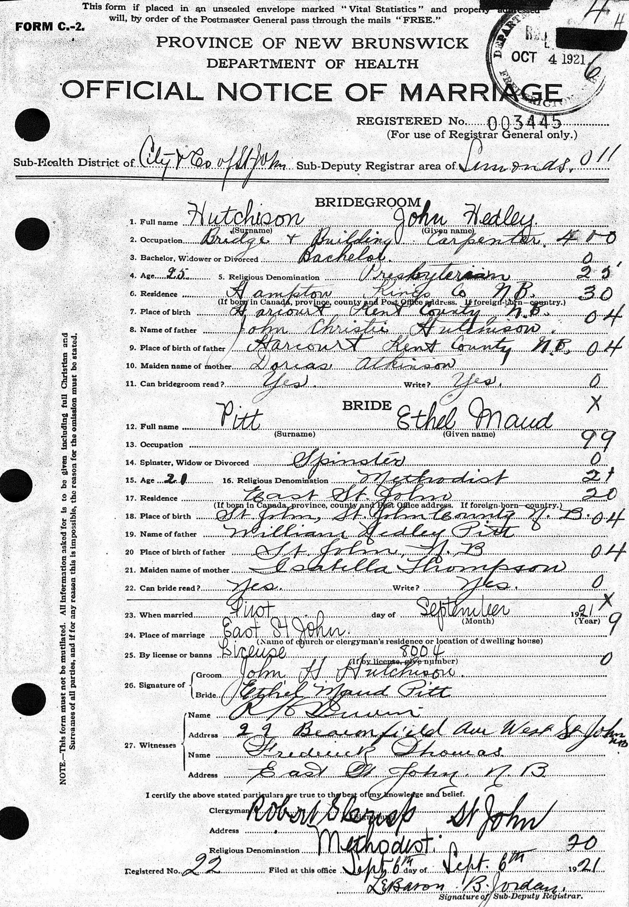

Ethel Maud Hutchison (née Pitt) 1898 - 1977
[ Home ] | [ Calendar ] | [ Surnames Index ] | [ Family History ]Ethel Pitt, the wife of John Hedley Hutchison (the fourth cousin once-removed on the father's side of Nigel Horne), was born in New Brunswick, Canada on Sep 5, 18981,2,3,4 and married John (a trainman on railroad with whom she had 2 children: Dorothy and Everett Hedley, along with 1 surviving child) in St John, New Brunswick on Sep 1, 1921.
Throughout her life, she lived at her birthplace in 19011; and in Providence, Rhode Island, USA on Apr 1, 19305 and on Apr 1, 19403.
She died on Oct 17, 1977 in Smithfield, Rhode Island2,4.
Children
- Everett Hedley was born on Mar 17, 1924
Citations
- Canada Census 1901 - Findmypast (was the daughter of the head of the household)
- Social Security Death Index - Findmypast
- US Census 1940 - Findmypast (was age 41 and the wife of the head of the household)
- United States Obituary Notices - Findmypast
- US Census 1930 - Findmypast (was age 31 and the wife of the head of the household)
Media
Joh Hutchinson - Ethel Pitt - Marriage Certificate

Canada Census 1901 - CAN/CENSUS/1901/00611892
Social Security Death Index - USBMD/SSDI/037446841
United States Obituary Notices - US/TRIB/003522716
Family Tree

Generated by Ged2Site. Last updated on Jul 20, 2025